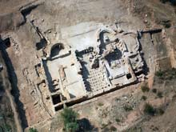

|
HUESCA
ROMANA
Principales yacimientos arqueológicos romanos:
- Yacimiento de
Villa Fortunatus, Fraga.
- Yacimiento de Labitolosa,
La Puebla de Castro. Las ruinas arqueológicas
de Labitolosa. Los principales monumentos excavados son, el edificio
llamado “del Genio del Municipio”, dos edificios termales y una domus. La
ciudad fue abandonada hacia finales del siglo III o principios del siglo II.

Puentes romanos destacados:
-Pertusa (Pertusa). En la villa de Pertusa, de origen ibero, se localizan
ruinas de época romana, destacando las de un puente de piedra de la vía
romana procedente de Monzón.
-Castejón del Puente (Castejón). El puente más monumental que tuvo el Alto
Aragón, casi 500 metros de longitud con unas 20 arcadas. Actualmente se
pueden contemplar sus restos desde la orilla. Permitía la comunicación
entre la costa mediterránea y la cantábrica.
-Congosto de Olvena (Olvena). La localidad de Olvena se localiza el puente
romano, llamado también “del Diablo”.
Vías romanas
destacadas:
La mayor parte de las calzadas conocidas convergen en Caesaraugusta.
De Italia in Hispanias
Asturica Terracone
Turiassone Caesaraugusta
Asturica per Cantabria Caesaraugusta
Estas cuatro vías, cruzan la región de este a oeste, pasando por los
siguientes municipios Mendiculeia (Monte de las Pueblas en Tamarite de
Litera), Tolous (Cerro de la Alegría en Monzón), Caum (en las cercanías de
Berbegal), Pertusa (Pertusa), Osca (Huesca) y Bourtina (Almudévar).
Vía transpirenaica por Jaca.
Vía del Cinca, entre Fraga y La Puebla de Castro.
En septiembre de 2019, aparece una
calzada romana del siglo I en las obras de unas calles de Jaca.
Sobre el siglo III o IV fue destruida por un incendio. Se protegerá con
una tela de geotextil y se cubrirá.
Las obras de reurbanización del Coso
sacan a la luz restos del teatro romano de Huesca. Los cimientos
localizados a principios de febrero de 2020 pueden corresponder a la
zona del escenario. También hay vestigios islámicos.
|